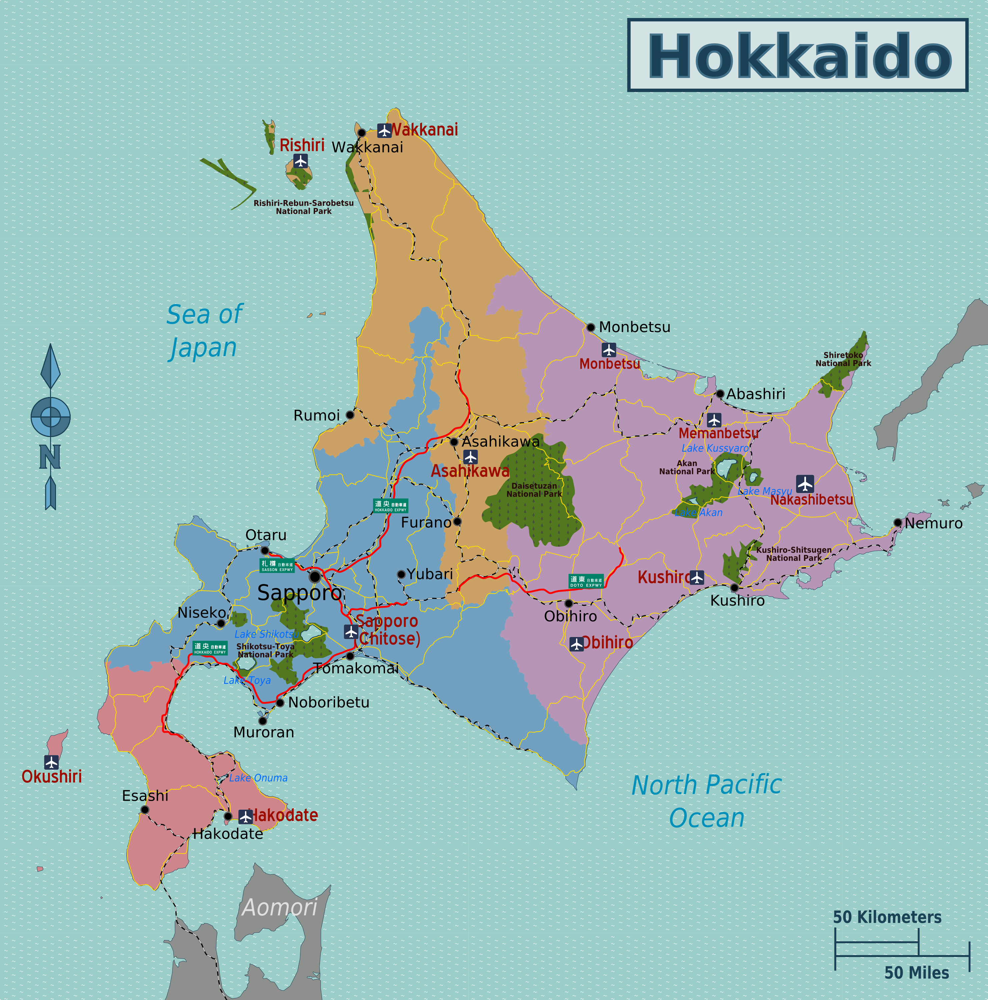
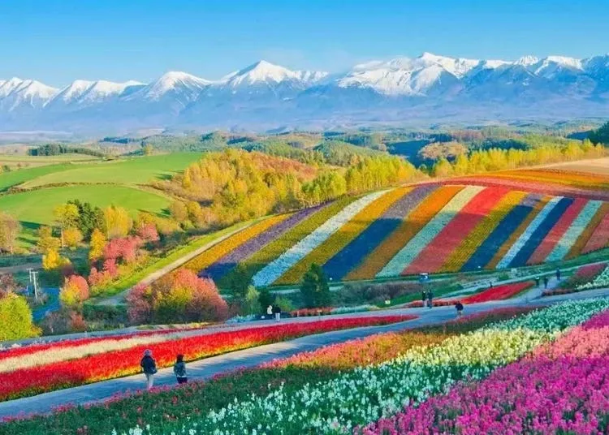
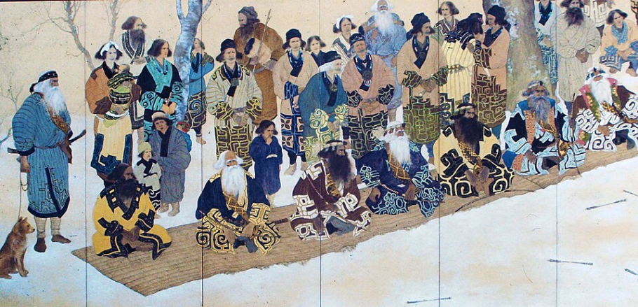
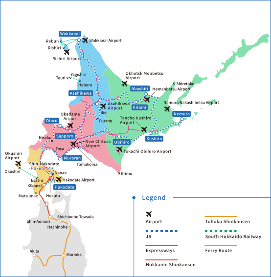
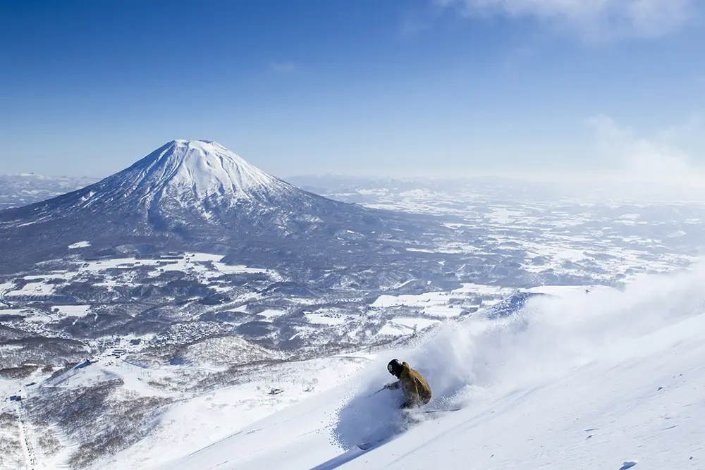
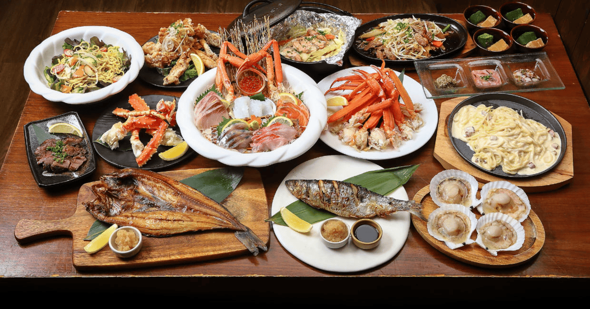

Hokkaido is known for its beautiful landscapes, snowy mountains, and delicious food.
Table of Contents
Why Visit Hokkaido?

Hokkaido offers a different experience compared to the rest of Japan. It is less crowded, more nature-focused, and rich in local culture. From snowcapped mountains, to fields of green, and open waters to go fishing, boating, or take in the sights. Want to explore more of the culture? Learn about the Ainu and how they were colonized into Japanese culture. Visit Sapporo and explore the famous Sapporo Museum to learn about how they make their beer.
What is Hokkaido?

Hokkaido is Japan's northernmost and second-largest island.
How to Get There
The easiest way to reach Hokkaido is by flying into New Chitose Airport.

What to Do
Hokkaido offers activities year-round, including skiing, hiking, sightseeing, and visiting Sapporo.

Food & Culture
Hokkaido is famous for ramen, seafood, and local cuisine.
